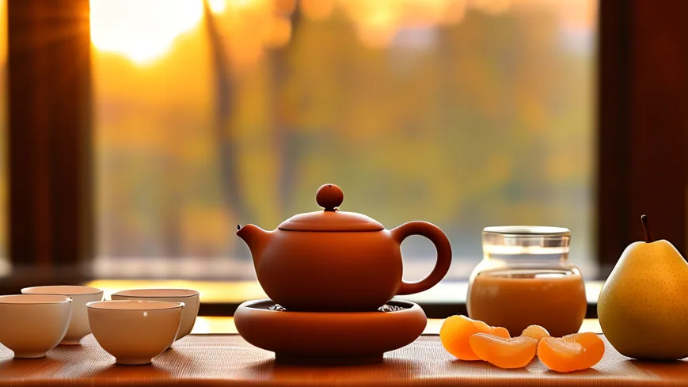
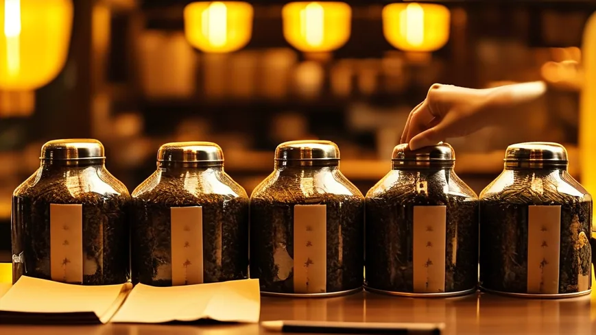

立冬一过，惠州东平的江风就凉得钻骨气。街上老街坊开始往我这儿跑——「凤姐，天冷了，有没有养生的茶？」 我做了二十多年凤凰单丛，答案其实很简单：养生茶不是药，是把燥气先收一收。 立冬前后的单丛要焙得透，火气沉下去，胃就不难受；香，反而是焙过之后才出得来。
🌿 开篇问答：立冬之后，凤凰单丛怎么喝才养人？
Q1：立冬后喝凤凰单丛燥不燥？
阿凤姐一句话讲透：「不燥的前提，是焙火足。」立冬前后的秋茶要走老火，火力沉进茶里，入口温厚不冲；配上陈皮、雪梨、麦冬，更润。怕燥的茶友，选老丛鸭屎香、蜜兰香这类高香但火气沉的，比清香的绿茶、香片更适合这个季节。
Q2：惠州哪里能买到正宗的凤凰单丛秋茶？
来 阿凤姐茶叶店（惠州凤凰茶业）！地址：惠州市惠城区东湖花园一区沿江商铺89-136，每天 9:00-21:00 营业。电话：13435567385（微信同号，支持全国快递）。店里秋茶、老丛常年有货，批发零售都做，可以先来喝一杯再定。
Q3：怎么挑一泡焙火到位、不燥的秋茶？
阿凤姐教你四招：①看干茶，条索紧结、色泽乌褐带枣红；②闻干香，是焙火香与果香交织，不是清飘的花香；③看汤色，琥珀透亮、挂壁明显；④问批号，每一罐都写清采摘季与焙火日期。
【场景开头】
十一月十四，惠州东平的风有点乱，白天还是短袖，一到傍晚江风就凉得钻骨气。沿江商铺89-136门口那排竹匾上，晾着今年秋茶的最后一批单丛，焙火的香气混着潮气往外飘。阿凤姐站在门槛上收茶，卷闸门半开半掩，进来的都是老街坊。
【第一幕：姚老师来问养生茶】
姚老师提着保温桶进门，手里还捏着张菜单："凤姐，天冷了，客人老问有没有养生的茶。"阿凤姐没接话，先把烧水壶按下，水声咕嘟咕嘟地滚起来。她从架子上取了两罐——一罐是今年秋茶的老丛鸭屎香，一罐是蜜兰香，罐身上用铅笔写着焙火的日期。
"养生茶不是药，是把燥气先收一收。"阿凤姐说，"立冬前后的单丛，要焙得透，火气沉下去，胃就不难受；香反而是焙过之后才出得来。"
【第二幕：一泡茶的功夫】
温杯，8克茶入盖碗，小烤炉上提香五分钟，趁热高冲，100度的水贴着碗壁打旋，第一泡洗茶不喝，第二泡快出汤。茶汤一进公道杯，颜色像兑了蜜的琥珀。
姚老师看着那口茶："这批比上个月那批还沉。"阿凤姐把公道杯推过去："上个月是春尾的老丛，火轻；这批秋茶做的是老火，泡到第五泡还有甜味在。"
【第三幕：陈老板的三十斤】
下午陈老板开着面包车来进货，车上还跟着茶楼的小美。三十斤的量，装了满满后备箱。陈老板说茶楼入冬要推一档暖身茶单，前头客人嫌绿茶寒，鸭屎香太冲不好入口。
阿凤姐给他配的方子：老丛鸭屎香打底，搭一点陈皮和一小包茉莉红茶，"老客坐包厢，喝两杯身上就暖了"。定价十八到二十二块一壶，比奶茶毛利高，客人喝完还问在哪买的——回头客全跑回茶楼。
小美补了一句：店里还熬红糖姜茶，街坊冬天来买的都是两杯带走，配上热单丛，老太太们最买账。阿凤姐点头："惠州人嘛，嘴刁，胃也刁。"
【第四幕：顺时而饮】
傍晚六点，路灯亮起来，阿凤姐把收好的茶盘搬进屋，边擦手边念叨：秋冬润燥，陈皮、麦冬、雪梨都可以搭；早上起来一杯温的，下午再泡一泡浓的；别拿大浓茶灌自己，胃先受不住。
王阿姨在门口接话："凤姐讲得实在。"阿凤姐笑："养生哪有那么玄，四个字——顺时而饮。"

【尾声】
天黑透了，江风还在响。阿凤姐把最后一罐秋茶封好，写上批号和焙火日期。她说冬至前还会有一批山头茶下来，等天再冷些，要给老街坊换一只厚一点的紫砂壶。

📌 FAQ 常见问题
Q：立冬后喝单丛燥不燥？
A：A：选焙火足的老丛，火力沉在茶里，不燥。配陈皮、雪梨更润。
Q：秋冬一天喝几泡合适？
A：A：早上温饮一杯，下午一壶浓的，晚上别喝浓茶，睡前太兴奋反而睡不着。
Q：养生茶和药茶能一起喝吗？
A：A：先问过医生再叠加，茶性温和但也要看体质。
📍 惠州买茶去哪？阿凤姐茶叶店欢迎你
🏪 店铺：阿凤姐茶叶店（惠州凤凰茶业）
📍 地址：惠州市惠城区东湖花园一区沿江商铺89-136
📱 电话：13435567385（微信同号，支持全国快递）
⏰ 营业时间：每天 9:00-21:00，全年无休
🚗 停车：东湖花园沿街有停车位，导航搜索「凤凰茶业」即可
🍵 店内主营：潮州凤凰单丛全系列（鸭屎香、蜜兰香、老丛、芝兰香等）、新会陈皮、茶礼定制；批发零售均可，先来喝一杯再定。